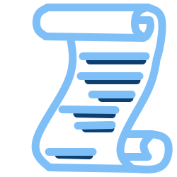
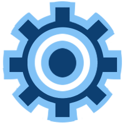
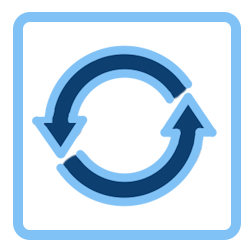

Une palette complète pour réussir votre parcours IA
Du premier diagnostic à la mise à l'échelle, nous couvrons chaque étape — vous choisissez le point d'entrée qui correspond à votre maturité et à vos besoins.
🧭 Conseil stratégique IA
Nous travaillons avec vos équipes pour comprendre vos enjeux métier et définir les cas d'usage qui comptent vraiment. Chaque idée est analysée sous l'angle du retour sur investissement, de la faisabilité et des risques éventuels.
Ce travail débouche sur une feuille de route claire, avec un calendrier réaliste et des indicateurs mesurables. Vous disposez ainsi d'une vision solide pour décider, convaincre vos parties prenantes et avancer sans dispersion.
Objectif
Valider rapidement la valeur sur vos données.
- Workshops décisionnels pour identifier les vrais leviers de valeur.
- Priorisation des cas d'usage avec scoring ROI, risques, faisabilité.
- Business case détaillé : budget, planning, KPIs.
Livrable
Prototype fonctionnel + mémo ROI pour décision go/no-go.
📚 Audit Data & Processus
Objectif
Savoir si vos données et votre architecture sont prêtes.
- Inventaire qualité des données, gap analysis RGPD / AI Act.
- Revue architecture (cloud, sécurité, gouvernance).
- Recommandations d'amélioration et quick-wins.
Livrable
Rapport clair + plan de mise à niveau technique & organisationnel.
Nous identifions les forces, les faiblesses et les points de conformité à renforcer (RGPD, AI Act, sécurité). Vous recevez ensuite un rapport opérationnel avec des recommandations concrètes et des quick-wins activables immédiatement.
Cette étape vous permet d'avancer en toute confiance, en sachant exactement où concentrer vos efforts.
🎓 Formations & Acculturation
Ateliers pratiques, modules métiers adaptés et coaching terrain : nous adaptons la pédagogie à votre contexte.
Vos collaborateurs repartent avec des compétences concrètes, des supports clairs et la confiance nécessaire pour intégrer l'IA dans leur quotidien.
Objectif
Rendre vos équipes autonomes et engagées.
- Ateliers prompt-engineering (ChatGPT, Copilot, etc.).
- Modules sectoriels : IA pour la production, la supply-chain, les RH…
- Parcours blended : e-learning + sessions live + coaching terrain.
Livrable
Rapport clair + plan de mise à niveau technique & organisationnel.
🛠️ PoC IA personnalisé
Objectif
Valider rapidement la valeur sur vos données.
- Prototypage 4-6 semaines, itérations courtes.
- Mesure de l'impact (gain temps, coûts, qualité).
- Gouvernance responsable (biais, explainability, sécurité).
Livrable
Prototype fonctionnel + mémo ROI pour décision go/no-go.
Chaque itération est mesurée pour évaluer son impact en termes de gain de temps, de réduction des coûts ou d'amélioration de la qualité.
Le PoC vous permet de valider concrètement la valeur métier de l'IA, tout en testant les aspects essentiels comme la sécurité ou l'explicabilité.
🏭 Industrialisation & MLOps
L'infrastructure déployée est ouverte (cloud ou on-premise), afin d'assurer votre indépendance et d'éviter tout verrouillage technologique. Vous disposez ainsi d'une solution stable, conforme et prête à évoluer au rythme de vos besoins.
Objectif
Passer du prototype à la production en toute confiance.
- Pipeline CI/CD modèles, tests automatiques, monitoring dérive.
- Infrastructure cloud ou on-prem open source — pas de vendor lock-in.
- Plan de reprise, conformité AI Act, documentation complète.
Livrable
solution industrialisée + tableau de bord valeur temps-réel.
🛡️ Support continu & Upskilling
Objectif
Garantir la performance et l'adoption long terme.
- Optimisation régulière des modèles, retrain automatisé.
- Service desk IA (SLA) + coaching régulier des équipes métiers.
- rapport trimestriel de valeur + plan compétences actualisé.
Livrable
Rapport trimestriel de valeur + plan compétences actualisé.
En parallèle, nous renforçons les compétences de vos équipes grâce à un accompagnement régulier et des points de veille sur les évolutions technologiques et réglementaires.
Ce dispositif vous garantit performance, pérennité et autonomie dans la durée.
Pack parcours complet
Pour ceux qui souhaitent une démarche clé en main, nous proposons un accompagnement intégral : stratégie, audit, formation, prototypage, industrialisation et support.
Avec une équipe unique qui pilote l'ensemble, vous gagnez en cohérence, en efficacité et en sérénité. Chaque étape est alignée sur vos priorités métier, et les résultats sont mesurés tout au long du parcours.